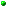

NetViewer source documentation

NetViewer is an experimental HTML 3.2 web browser written in pure
Java 1.1 AWT, dating from 1999. It parses HTML into a linked list of
element objects, computes a flow layout, renders incrementally on a
background thread, and supports clickable anchors, images, tables, and
form widgets.
This documentation is itself rendered inside NetViewer, using
only the tag subset the parser recognises:
<p>, <h1..h6>, <pre>,
<dl> / <dt> / <dd>, <table>,
<a>, <img>, <b>, <i>,
<tt>, <hr>.
The codebase is organised around a small number of recurring patterns:
a linked-list document model, an Elem base class
with one subclass per supported HTML element, two background threads
(loading and painting), and a couple of small data-carrier classes that
travel inside AWT events.
Application

NetViewer
- Main application window. A two-pane HTML browser built on AWT. Owns the toolbar, the status bar, and a docPanel containing two independent document views. Entry point: main(String[]).
- docPanel
- Container that hosts the two document views side by side and dispatches Open / Back / Reload commands from the toolbar to whichever pane has focus.
- mCanvas
- Custom Canvas that displays one parsed document. Fetches the source URL, calls HTMLDoc to parse it, owns the link hit-test map, and starts a RepaintThread for incremental paint.
Document model
- CompElem
- Composite element: a TagElem that owns a real AWT Component (button, text field, etc.). Used as a base for the form widgets.
- Elem
- Base class for every document element. A linked list node holding its element type code, text-style, alignment, link target, and rendered (x, y). Defines the integer type constants used throughout the renderer (TEXT, PARAGRAPH, TABLE, ANCHOR, INPUT, ...).
- ElemLine
- Helper that groups consecutive Elem nodes into one rendered line, computing the line width, height, and the position where the next line should begin. The core of NetViewer's line-breaking layout.
- HTMLDoc
- Parses an HTML source string into a singly-linked list of Elem objects. The list is the in-memory document model that the renderer walks during paint.
- Tag
- Represents one HTML tag occurrence: name, attribute hashtable, and a flag for whether it is an opening or closing tag. Built by tokenising the input between < and >.
- TagElem
- Common superclass for every element that is created from a parsed tag. Stores the originating Tag and exposes its attributes to subclasses.
- TextElem
- Element holding a run of plain text along with its current font/style attributes.
HTML element classes
- BrElem
- Implements the <br> tag: forces a line break.
- CenterElem
- Implements <center>: a DivElem that centres its content horizontally.
- DivElem
- Implements the <div> tag: a generic block container. Base for table cells and rows in this renderer.
- FontModElem
- Inline font modifier (<b>, <i>, <em>, <tt>, <code>, ...). Pushes a style change onto subsequent text.
- HrElem
- Implements the <hr> tag: draws a horizontal rule.
- ImgElem
- Implements the <img> tag: loads an image asynchronously and renders it once enough data has arrived.
- PElem
- Implements the <p> tag: a text paragraph with extra vertical spacing.
- ParagraphElem
- Container element representing a generic paragraph-level block.
- TextAreaElem
- Implements <textarea>: wraps an AWT TextArea inside the document flow.
Tables
- TabDatElem
- Implements <td>: one ordinary data cell.
- TabHeadElem
- Implements <th>: a header cell; a TabDatElem that draws its content in bold and centred.
- TableElem
- Implements <table>. Holds rows, performs cell sizing, and draws borders.
- TrElem
- Implements <tr>: one table row, a DivElem subclass.
Forms
- InputElem
- Implements <input>: text, password, checkbox, radio, submit, reset, or hidden, switched on the TYPE attribute.
- OptionElem
- Implements <option>: one entry inside a SelectElem.
- SelectElem
- Implements <select>: a drop-down list whose options are added by child OptionElems.
Anchors and links
- AnchorArgs
- Argument bundle passed when registering a new anchor with the document during parsing.
- AnchorData
- Stored anchor record: name plus the y coordinate to scroll to when the anchor is targeted.
- AnchorElem
- Implements <a>. Holds HREF (link target) and NAME (anchor) and toggles link styling on the contained text.
- AnchorList
- Collection of AnchorData entries: the document's index of named anchors.
- LinkArea
- Collection of LinkRects: the document's hit-test map. Used by mouse handlers to detect which link was clicked or hovered.
- LinkRect
- One clickable rectangle within a rendered link, with the URL it points to.
- RegLinkArgs
- Argument bundle for registering a new clickable region while the renderer walks the document.
Image handling
- ImgElemData
- Metadata for one image: URL, requested width and height, attribute string. Persists even before pixels arrive.
- ImgElemList
- List of ImgElem objects currently loading; lets the renderer ask 'is everything in?' before declaring layout final.
UI components
- LoadLocData
- Event payload requesting that the canvas load a new URL.
- OpenDialog
- Modal 'Open Location' dialog with a URL text field plus a Browse button that pops a native FileDialog.
- OpenDialogBuf
- Result buffer for OpenDialog: which button was pressed, the chosen location, and the last-used directory.
- RegLocData
- Event payload registering the URL of the document currently being loaded.
- StatusBar
- Bottom status line: a Canvas that draws a single string with a sunken 3D border.
- StatusBarData
- Wrapper carrying the new status message as an AWT Event payload.
- TitleData
- Event payload used to tell the frame to update its window title from a parsed <title> tag.
- Toolbar
- Top button bar (Open, Back, Reload, ...). A FlowLayout Panel.
Background threads
- LoaderThread
- Reads bytes from an InputStream in the background, appending them to a growing buffer. Cooperatively cancellable via interrupt().
- RepaintThread
- Walks the element list and paints each visible Elem. Cooperatively cancellable so a fresh paint can pre-empt a stale one.
Utilities
- Array
- Plain 2-D array of Objects with bounds-checked accessors. Used to back table cell grids.
- Graph
- Static helpers for drawing 3D-styled rectangles (raised/sunken) of arbitrary border thickness.
- Props
- Application-wide properties: font table per text style, special-character glyph table, on-disk page cache. Owned by an mCanvas.
Class hierarchy